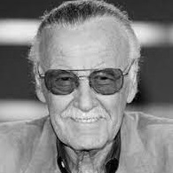
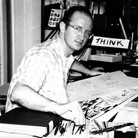
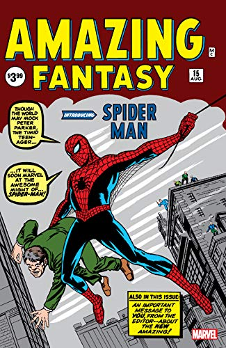

Sobre o Homem-Aranha...
O Homem-Aranha (Spider-Man), o alter ego de Peter Parker, é um super-herói que aparece nas revistas em quadrinhos publicadas pela Marvel Comics. Criado pelo escritor/editor Stan Lee e pelo escritor/artista Steve Ditko, o Homem-Aranha apareceu pela primeira vez na Amazing Fantasy #15 (agosto de 1962), durante a Era de Prata dos Quadrinhos. Lee e Ditko conceberam o personagem como um órfão que foi educado e criado pela sua tia May e o seu tio Ben em Nova Iorque e que, enquanto adolescente, tem de lidar com as lutas diárias normais da sua idade, em adição às lutas que tem como combatente do crime. Para combater seus inimigos, os criadores deram-lhe superforça e superagilidade, a capacidade de aderir na maioria das superfícies, a habilidade de disparar teias de aranha através de mecanismos montados nos pulsos (inventados por ele próprio e batizados de "lança-teia" — web-shooters) e a reação precognitiva ao perigo chamada "sentido-aranha" (spider-sense). Peter Parker adquiriu seus poderes após ter sido picado por uma aranha radioativa.
 No início dos anos 1960, quando o Homem-Aranha fez sua primeira aparição, os adolescentes nos quadrinhos de super-heróis eram habitualmente relegados para papéis secundários, como coadjuvantes. A série Spider-Man abriu um novo território ao apresentar Peter Parker, um estudante do Queens cujas "auto-obsessões com a rejeição, inadaptações e solidão" os jovens podiam se identificar. Apesar de ter todas as características de um coadjuvante, ao contrário de outros heróis adolescentes como Bucky e Robin, o Homem-Aranha não tinha nenhum super-herói mentor como o Capitão América e o Batman; ele teve que aprender sozinho que "com grande poder vem sempre uma grande responsabilidade" — uma frase incluída no último painel da primeira história do Homem-Aranha mais tarde atribuída retroativamente ao tio Ben.
A Marvel fez aparecer o Homem-Aranha em várias séries de revistas em quadrinhos, a primeira e mais longa chamada The Amazing Spider-Man. Ao longo dos anos, Peter Parker evoluiu de um nerd do ensino médio tímido e lerdo para um estudante universitário problemático, mas extrovertido, para um professor casado e, no final dos anos 2000, um fotografo independente (freelancer). Na década de 2010, junta-se aos Vingadores e ao Quarteto Fantástico, duas das equipes de super-heróis mais populares da Marvel.
O Homem-Aranha é um dos super-heróis mais populares e mais bem-sucedidos comercialmente. Como o mascote da Marvel, já apareceu em inúmeras formas de mídia, incluindo em várias séries de televisão animadas e ao vivo, tiras de jornais sindicados, em jogos eletrônicos e numa série de filmes em que foi interpretado por Tobey Maguire (2002–2007), Andrew Garfield (2012–2014), e Tom Holland que tem o papel do personagem no Universo Cinematográfico da Marvel, começando em 2016 com Capitão América: Guerra Civil. Reeve Carney desempenhou o papel de Homem-Aranha no musical da Broadway, Spider-Man: Turn Off the Dark. O Homem-Aranha tem sido bem recebido como personagem de quadrinhos e como super-herói e quase sempre reconhecido como o personagem topo da Marvel Comics. É geralmente classificado como um dos maiores personagens de quadrinhos de todos os tempos e um dos mais populares de toda a ficção.